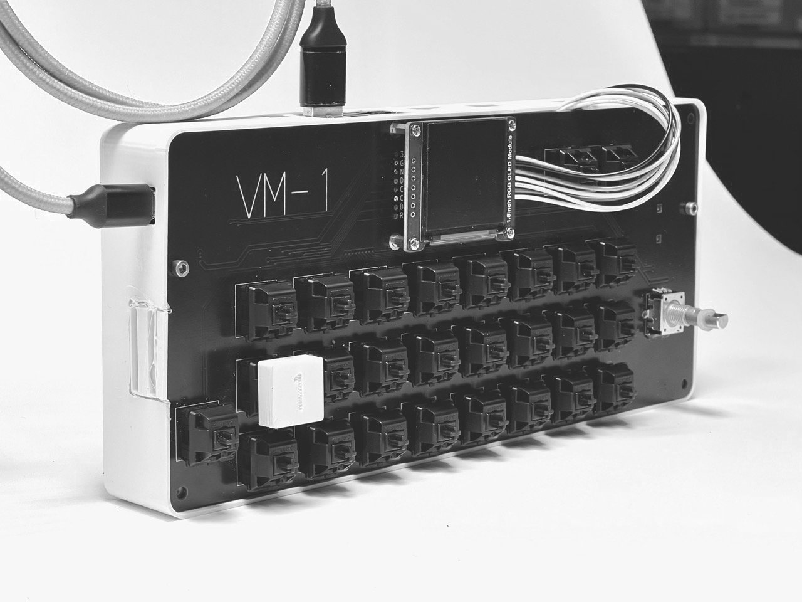

home
introducing: the VM-1
an open-source, low cost, full-hd video mixer and video sampler for creatives.
...all based on the raspberry pi 5.

the VM-1 [faʊ̯ ɛm aɪ̯ns] (or german: Video Mischer Eins) is currently in development. If you want to want to stay in the loop, join our community below.
what is it exactly?
we like to think of it as a visual instrument. just like a musical instrument - but for visuals. you can play and blend pre-recorded videos with other videos or live-cameras, adding effects and your unique style.
we want to enable artists with no or little technical skills to create high quality film content on stage. using the VM-1 will raise the level of their live video shows by focusing on playful creativity and visual aesthetics. VM-1 is made for, but not limited to, low budget live events.
watch a quick demo
who on planet earth needs this?
the VM-1 is targeting creatives who do live shows, performances, theatre, choreography or VJ-sets and whoever wants to explore their own visual style with video, visual samples or motion graphics.
I have seen video on stage before. what's so special about the VM-1?
- the VM-1 is super easy and fun to use.
- it's cheaper than traditional setups.
- it's open source.
- there is afawk no comparable product on the market.
learn even more
a traditional setup
a traditional setup with projectors and live cameras needs a laptop, hdmi-capture-devices and a software (like vvvv, isadora, resolume, touch-designer, tooll3, you-name-it). this works perfectly with the downside that it's rather expensive and a bit more complicated to learn it's usage.
we will not address how the cables are laid here.
vm-1 setup
the VM-1 has it all-in-one. plug in almost any cameras and use it for your upcoming live show with two (big) projectors, mixing it with your pre-produced videos - without any laptop or other gear. simply press a button and the selected video or live-input will be played.
out of a sudden, even the cables are laid nicely.
I want need it. where do i get it?
the VM-1 is still in developent and version 1 is coming in summer 2025. if you want to stay in the loop we'd like to invite you to join our community newsletter.